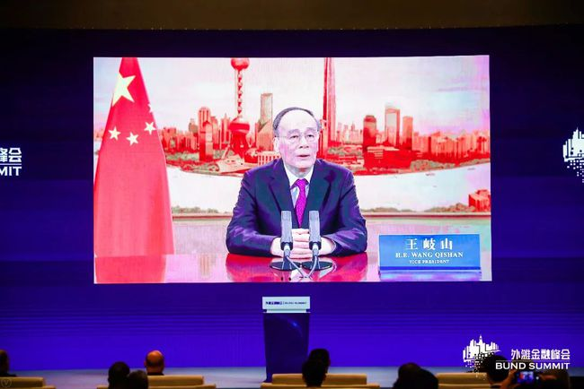

10月24日，中国金融40人论坛联合各组委会成员机构举办的第二届外滩金融峰在上海开幕，峰会主题为“危与机：新格局下的新金融与新经济”。
王岐山、易纲、周小川、马云等共话全球经济变局，信息量很大，一起来看看。
在中国金融四十人论坛在沪举办的2020第二届外滩金融峰会上，国家副主席王岐山致辞称，要坚持金融服务于实体经济。金融脱离实体经济就是无源之水，无本之木。
“中国金融不能走投机赌博的歪路，不能走金融泡沫自我循环的歧路，不能走庞氏骗局的邪路。要坚守金融发展基本规律和金融从业基本戒律，紧贴企业生产经营，抓住市场新趋势、新机遇，支持经济发展重点领域和薄弱环节，使金融服务与实体经济相互促进，健康发展。”王岐山表示。

各位嘉宾：
欢迎你们出席第二届外滩金融峰会。
当前，世界百年未有之大变局叠加新冠肺炎疫情大流行肆虐全球，触动国际政治、经济、科技、文化、安全格局深刻调整，世界经济深度衰退，经济全球化遭遇逆流，单边主义、保护主义思潮盛行，国际环境日趋复杂。世界进入了一个动荡变革的时期。
也要看到，人类已经进入互联互通的新时代。各国利益紧密相连，命运休戚与共，经济全球化仍是历史潮流，科学技术加速迭代，新产业、新业态、新模式不断涌现，为经济社会发展提供了新的动能。团结抗疫，共克时艰，合作共赢是全世界唯一正确的选择。我们要通过历史、文化和哲学的思考增强信心，以全面、辩证和长远的眼光认清大势，勇于创新，在危机中辨析新机，于变革中开拓新局。
各位嘉宾，中国已经进入高质量发展阶段。经济发展前景向好，同时外部环境的复杂性和严峻性也在上升。发展不平衡、不充分问题依然突出。我们将坚持稳中求进工作总基调，贯彻新发展理念，加快构建以国内大循环为主体，国内国际双循环相互促进的新发展格局。
新发展格局重在顺应变化。近年来，中国经济市场和资源两头在外的国际大循环动能明显减弱，内需对经济增长的贡献日益强劲。未来，中国经济内需潜力会不断释放。我们将坚持供给侧结构改革，继续扩大内需，更多依托国内市场，提升供给体系对需求的有效性。不断提升需求牵引供给、供给创造需求的高水平动态平衡。
新发展格局重在转变方式。要把中国经济增长动力从要素驱动转向创新驱动，从投资拉动转向消费投资双驱动，从两头在外转向自主与开放兼容，消除要素流动障碍的阻滞，畅通国民经济循环，更大范围把生产和消费联系起来，扩大交易范围，推动分工深化，提高生产效率，促进财富创造。
新发展格局重在进一步深化改革、扩大开放，要破除深层次体制机制障碍，让市场在资源配置中起决定性作用，更好发挥政府作用，稳定发展预期、政策预期、制度预期，打造更加法治化、国际化、便利化的营商环境，建设更高水平的开放经济新体制，更加主动利用好国际国内两个市场、两种资源，形成国际合作和竞争新优势。
各位嘉宾，金融是现代经济的核心。探索中国特色金融发展之路是一项长期、复杂、艰巨的任务。当前，全球金融经济环境变化剧烈，既要坚守底线，也要灵活应对风险挑战，勇于除旧立新。
要坚持金融服务于实体经济。金融脱离实体经济就是无源之水，无本之木。中国金融不能走投机赌博的歪路，不能走金融泡沫自我循环的歧路，不能走庞氏骗局的邪路。要坚守金融发展基本规律和金融从业基本戒律，紧贴企业生产经营，抓住市场新趋势、新机遇，支持经济发展重点领域和薄弱环节，使金融服务与实体经济相互促进，健康发展。
要坚持防范化解金融风险。金融业遵从的安全性、流动性、效益性三原则中，安全性永远排在第一位。要加强制度和能力建设，使中国金融企业经得起开放条件下市场竞争、经济周期变化、外部冲击考验。要标本兼治，用经济发展的增量削减风险，用规范的方式应对风险。在市场化、法治化的基础上，有序处置风险，守住不发生系统性风险的底线。
要坚持金融创新与加强监管并重。近年来金融新技术广泛应用，新业态层出不穷，在提高效率带来便利的同时也使得金融风险不断放大。
有理想但不能理想化。要在鼓励金融创新，激发市场活力，扩大金融开放与金融监管能力之间寻求平衡。要加强基础性、制度性建设， 提升队伍素质，强化监管手段，寓管理于服务之中，使金融业更好支持经济高质量发展。
最后，预祝本届峰会取得圆满成功，谢谢！